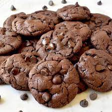

Classic Chocolate Chip Cookies Recipe
Description:
Indulge in the timeless goodness of homemade chocolate chip cookies. These soft, chewy cookies, studded with sweet chocolate chips, are a favorite for all ages. Baking a batch of these cookies will fill your home with warmth and comfort.

Ingredients:
- 2 1/4 cups all-purpose flour
- 1/2 teaspoon baking soda
- 1 cup unsalted butter, room temperature
- 1/2 cup granulated sugar
- 1 cup brown sugar, packed
- 1 teaspoon salt
- 2 teaspoons pure vanilla extract
- 2 large eggs
- 2 cups semi-sweet chocolate chips
Steps:
- Preheat your oven to 350°F (175°C).
- In a medium bowl, whisk together the flour and baking soda. Set aside.
- In a large bowl, cream together the butter, granulated sugar, brown sugar, and salt until smooth.
- Beat in the vanilla extract and eggs one at a time until well incorporated.
- Gradually add the dry ingredients to the wet mixture and mix until just combined.
- Stir in the chocolate chips.
- Drop spoonfuls of cookie dough onto an ungreased baking sheet and bake for 10-12 minutes, or until the edges are lightly golden.
- Allow cookies to cool on the baking sheet for a few minutes before transferring them to a wire rack to cool completely.
- Enjoy your freshly baked chocolate chip cookies with a glass of milk!